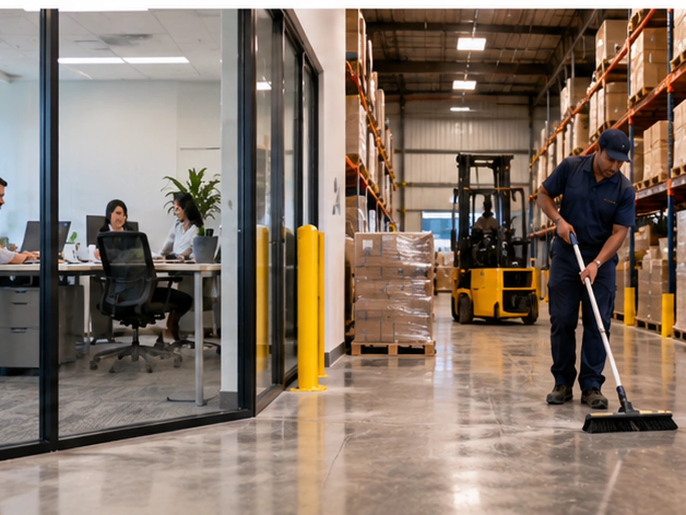

Clean Spaces
We have offices in the front and a warehouse in the back, and everyone works different hours. How do I handle the cleaning?

The schedule can follow each area’s operating hours instead of forcing both sides into one visit.
Map the property by use, not just square footage
Front offices and warehouse areas usually create different kinds of dirt. Office cleaning is more focused on workstations, glass, restrooms, breakrooms, and presentation. Warehouse cleaning may be more focused on concrete floors, storage areas, loading activity, and larger debris.
Match each zone to its quiet period
If warehouse staff work late but office staff leave earlier, the office can be cleaned first. If warehouse activity slows overnight or between shifts, heavier floor work can be scheduled then. One property can have more than one cleaning window.
Keep shared spaces on their own schedule
Entrances, employee restrooms, breakrooms, and hallways may be used by both office and warehouse staff. Those spaces often need a frequency based on total traffic rather than one department’s schedule.
Use one plan with clear zones
You do not necessarily need separate cleaning companies. A single plan can identify each area, its tasks, its schedule, and the equipment needed. That makes it easier to manage quality across the entire property.